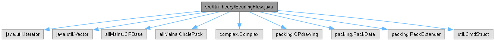

|
CirclePack-JA
doc with Opus 4.6
|
|
CirclePack-JA
doc with Opus 4.6
|
import java.util.Iterator;import java.util.Vector;import allMains.CPBase;import allMains.CirclePack;import complex.Complex;import packing.CPdrawing;import packing.PackData;import packing.PackExtender;import util.CmdStruct;
Go to the source code of this file.
Classes | |
| class | ftnTheory.BeurlingFlow |
| Routine for experimenting with the Beurling-Riemann Mapping. More... | |
Packages | |
| package | ftnTheory |